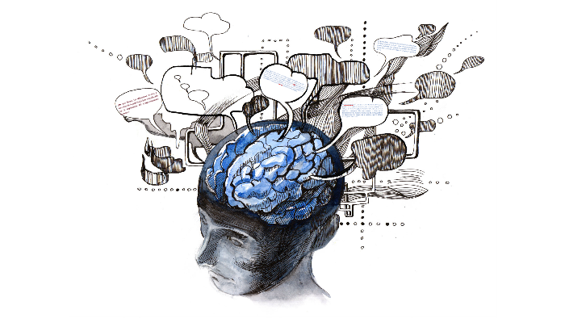

El enfoque sistémico también tiene profundas implicaciones morales y éticas. Los Pensadores y los Ingenieros de Sistemas deben asumir una responsabilidad ética en el uso de metodologías que minimicen errores y consideren las consecuencias colaterales de sus acciones. La ética sistémica implica actuar de manera honesta, aprender de las experiencias pasadas y evitar causar daño, especialmente a los seres vivos y su hábitat. Además, los profesionales de sistemas deben ser ejemplos vivos de sus principios, demostrando coherencia entre lo que saben, piensan, dicen y hacen.
